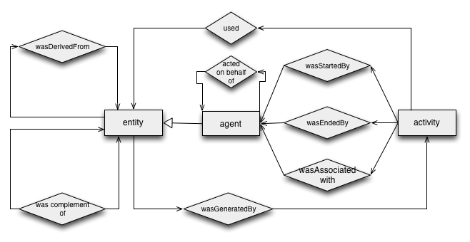

Status of This Document
This section describes the status of this document at the time of its publication. Other documents may supersede this document. A list of current W3C publications and the latest revision of this technical report can be found in the W3C technical reports index at http://www.w3.org/TR/.
This document is part of a set of specifications aiming to define the
various aspects that are necessary to achieve the vision of
interoperable interchange of provenance information in heterogeneous
environments such as the Web. This document is a non-normative,
intuitive introduction and guide to the [
PROV-DM] data model for
provenance. It includes simple worked examples applying the [
PROV-O]
OWL2 ontology. The document is expected to become a Note once it is stable.
This document was published by the Provenance Working Group as a First Public Working Draft.
If you wish to make comments regarding this document, please send them to public-prov-wg@w3.org (subscribe, archives). All feedback is welcome.
Publication as a Working Draft does not imply endorsement by the W3C Membership. This is a draft document and may be updated, replaced or obsoleted by other documents at any time. It is inappropriate to cite this document as other than work in progress.
This document was produced by a group operating under the 5 February 2004 W3C Patent Policy. The group does not expect this document to become a W3C Recommendation. W3C maintains a public list of any patent disclosures made in connection with the deliverables of the group; that page also includes instructions for disclosing a patent. An individual who has actual knowledge of a patent which the individual believes contains Essential Claim(s) must disclose the information in accordance with section 6 of the W3C Patent Policy.
1. Introduction
This primer document provides an accessible introduction to the PROV Data Model
([PROV-DM]) standard for representing provenance on the Web, and its representation
in the PROV Ontology ([PROV-O]). Provenance describes
the origins of things, so PROV-DM data consists of assertions about the past.
This primer document aims to ease the adoption of the standard by providing:
- An intuitive explanation of how PROV-DM models provenance.
- Worked examples that can be followed to produce your own PROV-DM data.
- Answers to frequently asked questions regarding how the model should be applied.
The provenance of digital objects represents their origins. The PROV-DM is a
proposed standard to represent provenance records, which contain assertions about the entities
and activities involved in producing and delivering or otherwise influencing a
given object. By knowing the provenance of an object, we can make determinations
about how to use it. Provenance records can be used for many purposes, such as
understanding how data was collected so it can be meaningfully used, determining
ownership and rights over an object, making judgments about information to
determine whether to trust it, verifying that the process and steps used to obtain a
result complies with given requirements, and reproducing how something it was generated.
As a standard for provenance, PROV-DM accommodates all those different uses
of provenance. Different people may have different perspectives on provenance,
and as a result different types of information might be captured in provenance records.
One perspective might focus on agent-centered provenance, that is, what entities
were involved in generating or manipulating the information in question. For example,
in the provenance of a picture in a news article we might capture the photographer who
took it, the person that edited it, and the newspaper that published it. A second perspective
might focus on object-centered provenance, by tracing the origins of portions of a
document to other documents. An example is having a web page that was assembled from content
from a news article, quotes of interviews with experts, and a chart that plots data from a
government agency. A third perspective one might take is on process-centered provenance,
capturing the actions and steps taken to generate the information in question. For example, a
chart may have been generated by invoking a service to retrieve data from a database, then
extracting certain statistics from the data using some statistics package, and finally
processing these results with a graphing tool.
Provenance records are metadata. There are other kinds of metadata that is
not provenance. For example, the size of an image is a metadata property of
that image but it is not provenance.
For general background on provenance, a
comprehensive overview of requirements, use cases, prior research, and proposed
vocabularies for provenance are available from the
Final Report of the W3C Provenance Incubator Group.
That document contains three general scenarios
that may help identify the provenance aspects of your planned applications and
help plan the design of your provenance system.
The next section gives an introductory overview of PROV-DM using simple examples.
The following section shows how the formal ontology PROV-O can be used to represent the PROV-DM assertions
as RDF triples. The document also contains frequently asked questions, and an appendix giving example
snippets of the PROV-DM Abstract Syntax Notation (ASN).
For a detailed description of [PROV-DM] and [PROV-O], please refer to the respective documents.
2. Intuitive overview of PROV-DM
This section provides an intuitive explanation of the concepts in PROV-DM.
As with the rest of this document, it should be treated as a starting point for
understanding the model, and not normative in itself. The PROV-DM model specification
provides precise definitions and constraints to be used.
Please note that, as they
are being developed in parallel, there will be points at which this document
does not yet exactly match the current data model or ontology.
The following ER diagram provides a high level overview of the structure of PROV-DM records.
The diagram is the same that appears in the [PROV-DM],
but note that this primer document only describes some of the terms shown in the diagram.

2.1 Entities
In PROV-DM, the things that one may ask the provenance of are called entities.
Examples of such entities are a web page, a chart, and a spellchecker.
An entity’s provenance may refer to many other entities. For example, a document D is
an entity whose provenance refers to other entities such as a chart inserted into D,
the dataset that was used to create that chart, or the author of the document.
Entities may be described from different perspectives that may be more or less specific. For example,
document D as stored in my file system, the second version of document D after someone edited it,
and D as an evolving document,
are three distinct entities for which we may describe the provenance. They
may all be perspectives on the same thing in the world (document D may exist only
in its second version and on my file system), but are characterized in
different ways by being described using different attributes (version, location, and
so on).
The characterization of an entity means that the provenance assertions
about the entity are only about the thing when it has those attributes.
For example, the second version of document D is characterized by being the
second version, and so assertions about who reviewed that entity apply only
to the document as it is in its second version. When the document becomes
the third version, a new entity exists (the third version of D) and the
provenance assertions about who reviewed the second version do not apply.
2.2 Activities
Activities are how entities come into
existence and how their attributes change to become new entities,
often making use of previously existing entities to achieve this.
For example, if the second version of document D was generated
by a translation from the first version of the document in another language,
then this translation is an activity.
An activity may have either already occurred or be still
taking place when a new entity is generated.
While entities are static aspects in the world (things), activities are
dynamic aspects (actions, processes, etc.)
2.3 Use and Generation
Activities generate new entities.
For example, writing a document brings the document into existence, while
revising the document brings a new version into existence.
Activities also make use of entities. For example, revising a document
to fix spelling mistakes uses the original version of the document as well
as a list of corrections.
Assertions can be made in a provenance record to state that
particular activities used or generated particular entities.
2.4 Agents
An agent is a type of entity that takes an active role in an activity such
that it can be assigned some degree of responsibility for the activity taking
place. An agent can be a person, a piece of software, or an inanimate object.
Several agents can be associated with an activity.
Consider a chart displaying some statistics
regarding crime rates over time in a linear regression. To represent the
provenance of a that chart, we could state that the person who created the
chart was an agent involved in its creation, and that the software used to
create the chart was also an agent involved in that activity.
Since agents are a kind of entity, it is therefore possible to
associate provenance records with the agents themselves.
In the running example, we
can also represent the provenance of the software used to create the chart, and specify the agents involved in
producing that software, such as the vendor.
2.5 Roles
A role is a description of the function or the part that an entity
played in an activity. Roles specify
the relationship between an entity and an activity, whether
how an activity used an entity or generated an entity. Roles also specify how agents are
involved in an activity, qualifying their participation in the activity or
specifying what agents controlled it.
For example, an agent may play the role of "editor" in an activity that uses
one entity in the role of "document to be edited" and another in the role of
"addition to be made to the document", to generate a further entity in the role of "edited document".
Roles are application specific.
2.6 Revisions and Derivation
A given entity, such as a document, may go through multiple revisions
(also called versions and other comparable terms) over time. Between revisions,
one or more attributes of the entity may change.
The result of each revision is a new entity,
and PROV-DM allows one to relate those entities by making an assertion that
one is a revision of another.
When one entity's existence, content, characteristics and so on are
at least partly due to another entity, then we say that the former is
derived from the latter. For example, one document may contain
material copied from another,
and a chart is derived from the data that is used to create it.
There are different kinds of derivation expressible in PROV-DM. For
example, the data may be normalized before creating the chart.
In PROV-DM terms, we say that the chart was derived from
the normalized data and was eventually derived from the original data.
3. Examples of Use of the PROV-O Ontology
In the following sections, we show how PROV-DM can be used to model
provenance in specific examples.
We include examples of how the formal ontology PROV-O
can be used to represent the PROV-DM assertions as RDF triples.
These are shown using the Turtle notation. In
the latter depictions, the namespace prefix prov denotes
terms from the Prov ontology, while ex1, ex2, etc.
denote terms specific to the example.
We also provide a representation of the examples in the Abstract
Syntax Model ASM used in the conceptual model document. The full ASM data
for the examples in this section is
included in the appendix.
3.1 Entities
An online newspaper publishes an article with a chart about crime statistics making using of data (GovData) provided through a government portal.
The article includes a chart based on the data, with data values aggregated by
geographical regions.
A blogger, Betty, looking at the article, spots what she thinks to be an error in the chart.
Betty retrieves the provenance record of the article, how it was created.
Betty would find the following assertions about entities in the provenance record:
ex1:newspaper1 a prov:Entity .
ex1:article1 a prov:Entity .
ex1:regionList1 a prov:Entity .
ex1:aggregate1 a prov:Entity .
ex1:chart1 a prov:Entity .
These statements, in order, assert that there is a newspaper (ex1:newspaper1) and an article (ex1:article1),
that the original data set is an entity (ex1:dataSet1),
there is a list of regions
(ex1:regionList1) that is an entity, that the data aggregated by region is an entity (ex1:aggregate1),
and that the chart (ex1:chart1) is an entity.
3.2 Activities
Further, the provenance record asserts that there was
an activity (ex1:compiled) denoting the compilation of the
chart from the data set.
ex1:compiled a prov:Activity .
The provenance record also includes reference to the more specific steps involved in this compilation,
which are first aggregating the data by region and then generating the chart graphic.
ex1:aggregated a prov:Activity .
ex1:illustrated a prov:Activity .
3.3 Use and Generation
Finally, the provenance record asserts the key relations among the above
entities and activities, i.e. the use of an entity by an activity,
or the generation of an entity by an activity.
For example, the assertions below state that the aggregation activity
(ex1:aggregated) used the original data set, that it used the list of
regions, and that the aggregated data was generated by this activity.
ex1:aggregated prov:used ex1:dataSet1 ;
prov:used ex1:regionList1 .
ex1:aggregate1 prov:wasGeneratedBy ex1:aggregated .
Similarly, the chart graphic creation activity (ex1:illustrated)
used the aggregated data, and the chart was generated by this activity.
ex1:illustrated prov:used ex1:aggregate1 .
ex1:chart1 prov:wasGeneratedBy ex1:illustrated .
3.4 Agents
Digging deeper, Betty wants to know who compiled the chart.
Betty sees that Derek was involved in both the aggregation and
chart creation activities:
ex1:aggregated prov:wasControlledBy ex1:derek .
ex1:illustrated prov:wasControlledBy ex1:derek .
The record for Derek provides the
following information, of which the first line is a PROV-O statement that
Derek is an agent, followed by statements about general properties of Derek.
ex1:derek a prov:Agent ;
a foaf:Person ;
foaf:givenName "Derek"^^xsd:string ;
foaf:mbox <mailto:dererk@example.org> .
3.5 Roles
For Betty to understand where the error lies, she needs to have more detailed
information on how entities have been used in, participated in, and generated
by activities. Betty has determined that ex1:aggregated used
entities ex1:regionList1 and ex1:dataSet1, but she does not
know what function these entities played in the processing. Betty
also knows that ex1:derek controlled the activities, but she does
not know if Derek was the analyst responsible for determining how the data
should be aggregated.
The above information is described as roles in the provenance records. The aggregation
activity involved entities in four roles: the data to be aggregated (ex1:dataToAggregate),
the regions to aggregate by (ex1:regionsToAggregateBy), the
resulting aggregated data (ex1:aggregatedData), and the
analyst doing the aggregation (ex1:analyst).
ex1:dataToAggregate a prov:Role .
ex1:regionsToAggregateBy a prov:Role .
ex1:aggregatedData a prov:Role .
ex1:analyst a prov:Role .
In addition to the simple facts that the aggregation activity used, generated or
was controlled by entities/agents as described in the sections above, the
provenance record contains more details of how these entities and agents
were involved, i.e. the roles they played. For example, the assertions below state
that the aggregation activity (ex1:aggregated) included the usage
of the government data set (ex1:dataSet1) in the role of the data
to be aggregated (ex1:dataToAggregate).
ex1:aggregated prov:hadQualifiedUsage [ a prov:Usage ;
prov:hadQualifiedEntity ex1:dataSet1 ;
prov:hadRole ex1:dataToAggregate ] .
This can then be distinguished from the same activity's usage of the list of
regions because the roles played are different.
ex1:aggregated prov:hadQualifiedUsage [ a prov:Usage ;
prov:hadQualifiedEntity ex1:regionList1 ;
prov:hadRole ex1:regionsToAggregateBy ] .
Similarly, the provenance includes assertions that the same activity was
controlled in a particular way (ex1:analyst) by Derek, and that
the entity ex1:aggregate1 took the role of the aggregated
data in what the activity generated.
ex1:aggregated
prov:hadQualifiedControl [ a prov:Control ;
prov:hadQualifiedEntity ex1:derek ;
prov:hadRole ex1:analyst
] ;
prov:hadQualifiedGeneration [ a prov:Generation ;
prov:hadQualifiedEntity ex1:aggregate1 ;
prov:hadRole ex1:aggregatedData
] .
3.6 Revision and Derivation
After looking at the detail of the compilation activity, there appears
to be nothing wrong, so Betty concludes the error is in the government dataset.
She looks at the characterization of the dataset ex1:dataSet1,
and sees that it is missing data from one of the zipcodes in the area. She contacts
the government, and a new version of GovData is created, declared to be the
next revision of the data by Edith. The provenance record of this new dataset,
ex1:dataSet2, states that it is a revision of the
old data set, ex1:dataSet1.
ex1:dataSet2 prov:wasRevisionOf ex1:dataSet1 .
Derek notices that there is a new dataset available and creates a new chart based on the revised data,
using the same compilation activity as before. Betty checks the article again at a
later point, and wants to know if it is based on the old or new GovData.
She sees two new assertions about derivation in the provenance data, plus
an assertion about how the new chart was generated.
ex1:chart2 prov:wasEventuallyDerivedFrom ex1:dataSet2 .
ex1:chart2 prov:wasDerivedFrom ex1:dataSet2 .
ex1:chart2 prov:wasGeneratedBy ex1:compiled2 .
She interprets these assertions as follows. The first says that the new chart
is as it because of the revised
data set, i.e. there is an explicit influence of the data on the chart.
Finally, the third and fourth assertions together say further that it was
the activity ex1:compiled2 that derived the new chart
from the revised data set.
A. Abstract Syntax Notation for Examples
Below we give translations of the working example snippets into the PROV-DM
abstract syntax notation (ASN).
A.1 Entities
entity(ex1:dataSet1).
entity(ex1:regionList1).
entity(ex1:aggregate1).
entity(ex1:chart1).
A.2 Activities
activity(ex1:compiled).
activity(ex1:aggregated).
activity(ex1:illustrated).
A.3 Use and Generation
used(ex1:aggregated, ex1:dataSet1).
used(ex1:aggregated, ex1:regionList1).
wasGeneratedBy(ex1:aggregate1, ex1:aggregated).
used(ex1:illustrated, ex1:aggregate1).
wasGeneratedBy(ex1:chart1, ex1:illustrated).
A.4 Agents
entity(ex1:derek, [ type="foaf:Person", foaf:givenName = "Derek",
foaf:mbox= "<mailto:derek@example.org>"]).
agent(ex1:derek).
wasControlledBy(ex1:aggregated, ex1:derek).
wasControlledBy(ex1:illustrated, ex1:derek).
A.5 Roles
Roles are not declared directly in PROV-DM, rather they are attributes of
relations. Thus, the entire Turtle example in sec. 3.5 is rendered as follows:
used(ex1:aggregated, ex1:dataSet1, [ prov:role = "dataToAggregate"]).
used(ex1:aggregated, ex1:regionList1, [ prov:role = "regionsToAggregteBy"]).
In the first assertion above, note that this adds a "role" attribute to the first 'used' assertion of Ex. 3.
Similarly in the second assertion, we have added a "role" attribute to the second 'used' assertion of Ex. 3.
A.6 Revision and Derivation
wasRevisionOf(ex1:dataSet2, ex1:dataSet1).
wasEventuallyDerivedFrom(ex1:chart2, ex1:dataSet2).
wasDerivedFrom(ex1:chart2, ex1:dataSet2).
wasGeneratedBy(ex1:chart2, ex1:compiled2).